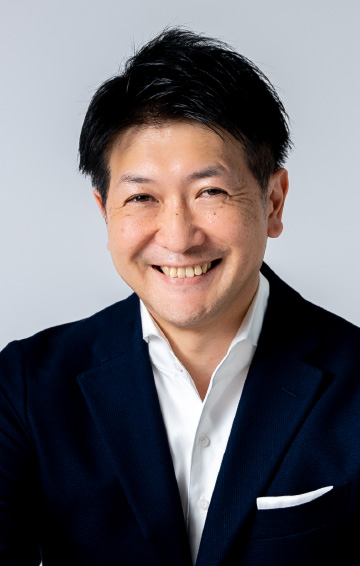

8.23（水）14：45～15：15
生き残る企業、生き残れない企業 ～LTV経営を実現するデジタル×事業開発
Ridgelinez
上席執行役員Partner
平山 将 氏
デジタル時代の戦略やサービスは模倣性が高く、事業の差異化はより困難になっています。そのような環境下、生活者に選ばれ続けるLTV経営の実現は不可避の経営アジェンダです。本セッションでは、自社ならではの強みで生活者の自分らしさを実現する「共鳴型」の事業開発モデルとLTV経営の実現に向けた実践的なアプローチ方法をご紹介します。